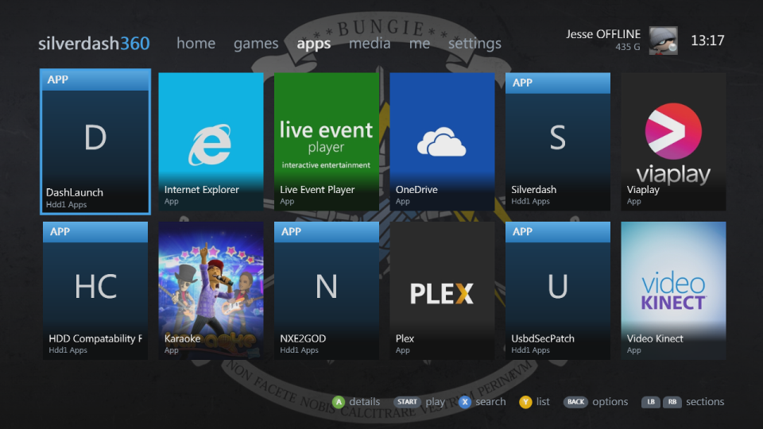
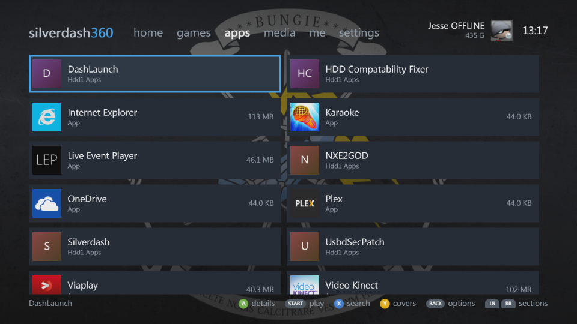
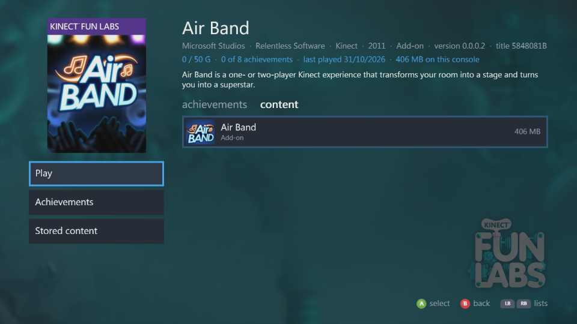

Games and apps¶
The games and apps sections are shelves of everything installed on the console's hard drive and USB drives. Each title has its box art from the Xbox Marketplace, where the console's own dashboard gets it, or the package's own picture.
 |
 |
 |
 |
What's listed¶
- Xbox 360 games: installed discs, Games on Demand and Arcade, Indie and XNA games and demos.
- Original Xbox games, each one its own title.
- Apps, such as media apps, told apart from games by their title ID.
- Homebrew: a
default.xexin each folder of a drive'sAppsandGamesfolders (Hdd1,Usb0toUsb2), and.xexfiles right inApps. Each is named after its folder, unless a package or your profile names it. - QuickBoot shortcuts show as the app or game they start; a shortcut and the folder it starts are listed once.
- Titles with nothing to start, such as a game with only saves or add-ons left, are hidden until you show them with the shelf's options.
Silverdash360 keeps what it read, so it starts quickly. At a start it shows the library it saved and looks only for what starts games and apps, and for themes, as they come and go; a title's add-ons, updates and saves are listed again when you open its page. Refresh library in settings reads everything again.
Box art and store details are downloaded in the background and kept in the Data\Art folder, so they're there without the internet afterwards. A title the Marketplace doesn't know gets a cover of its kind with its icon or its initials.
Covers and lists¶
Y switches a shelf between covers, two rows that scroll sideways, and a list with sizes and achievement progress. LT and RT move a screen at a time.
A shelf sorted by name and long enough has a letter tile heading each letter's titles. A on a letter shows the letters alone, to jump through the shelf; A on a letter again shows everything, with that letter where it was.
The shelf's options¶
BACK on a shelf opens its options. A changes a setting, X steps it back, and B is done; the shelf follows at once and keeps them:
| Option | |
|---|---|
| Show | Installed titles (the default), a kind (Xbox 360 games, Arcade, Indie and XNA, Demos, Original Xbox, Homebrew), the titles not installed, or everything |
| Stored on | A drive, or all of them |
| Sort by | Name, size or last played |
| View | Covers or a list |
| A button | Whether A plays a title or shows its details; START does the other |
A title's details¶
A title's page has its backdrop, the store's description, developer, genre and release date, and two lists that LB and RB switch between: achievements, your progress in it, when you're signed in and have played it, and content, what's stored for it (the game, title updates, add-ons, saves) with sizes. Play starts it, with Play from disc when its disc is in the drive and a Play disc for each disc of a game with several; Achievements and Stored content go to the lists.
 |
 |
Discs¶
A disc in the drive comes first in jump back in, with a little disc on its cover. A game disc starts; a disc of files opens in media; a DVD movie, audio CD or original Xbox disc plays in the console's own player. For a game with several discs, its page has a Play disc for each. Y on home opens and closes the tray.